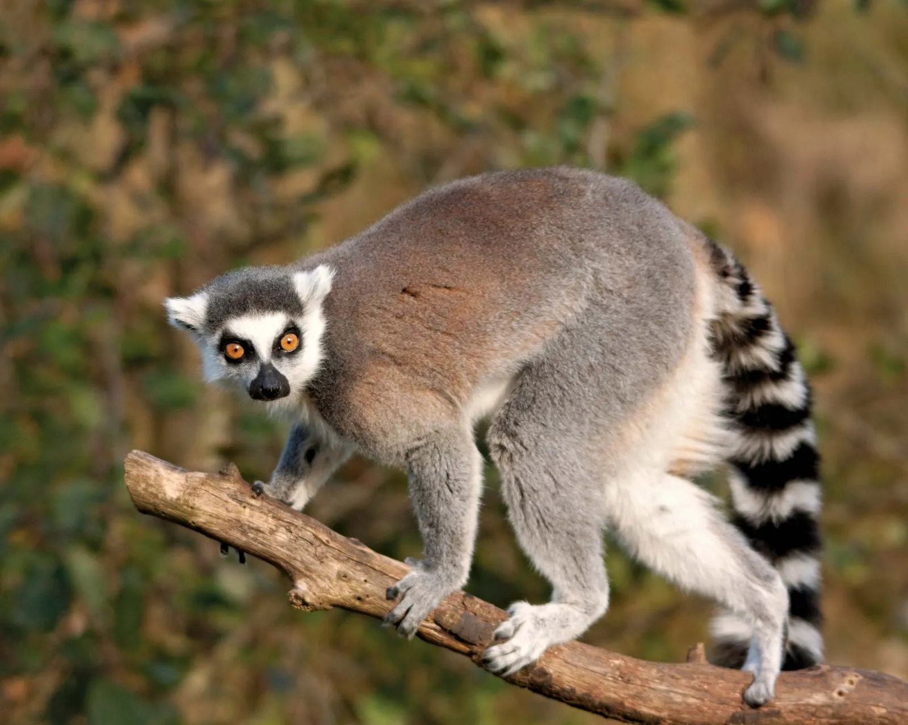
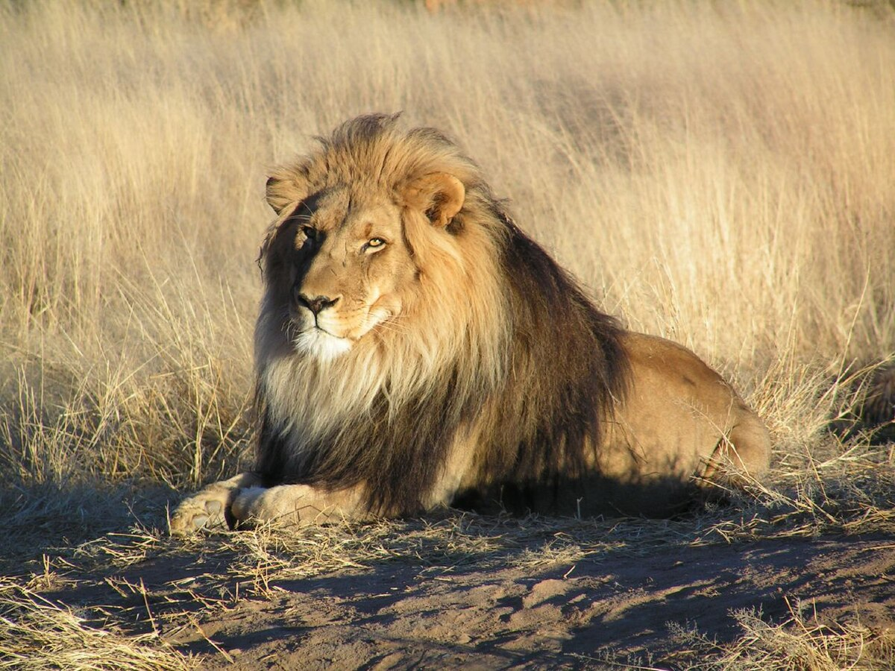
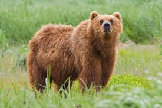
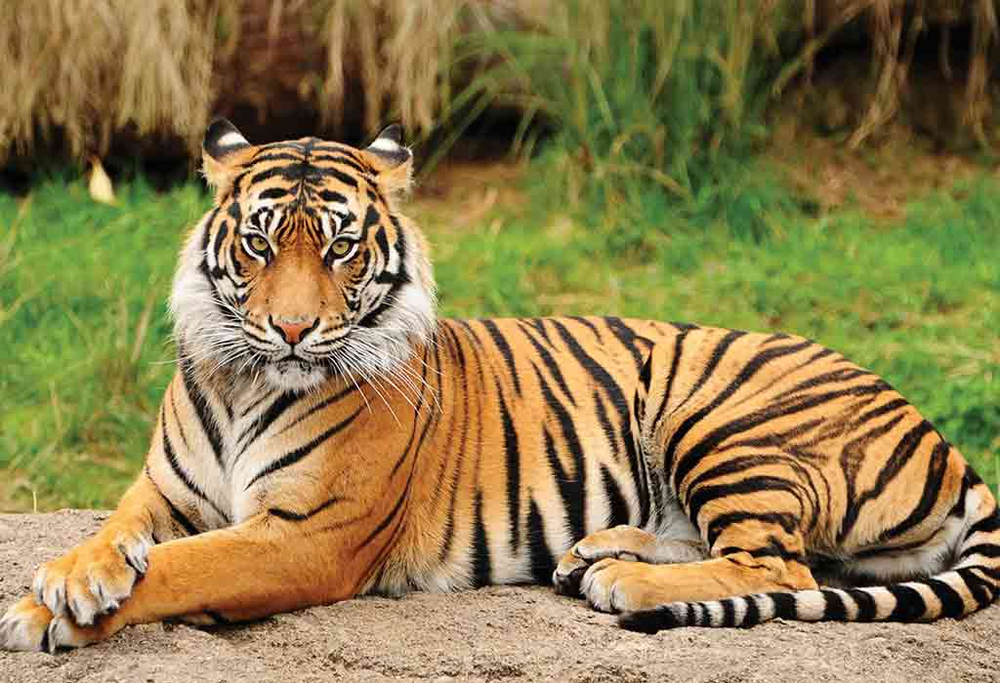
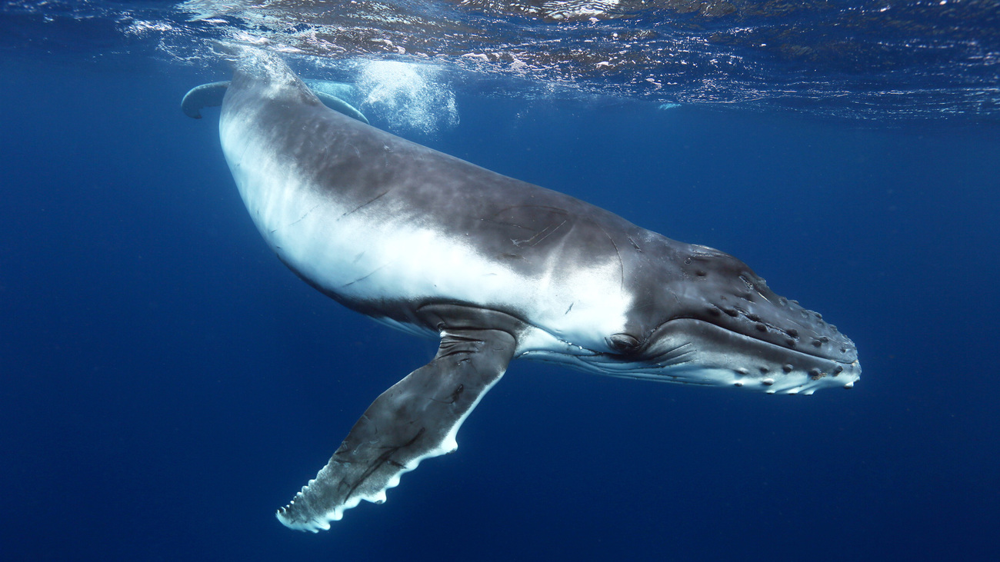

Lemurs are prosimians, a type of primate. Other primates include monkeys, apes and humans. Lemurs are endemic to Madagascar, where they evolved in isolation. Unlike monkeys, lemurs have a moist nose and rely more heavily on their sense of smell. Physically many have especially pointed snouts and all but the largest lemur, the Indri, have long tails. Today we know there are over 100 kinds of lemurs and new species are continuing to be described by scientists.
African lions have been admired throughout history for as symbols of courage and strength. These iconic animals have powerful bodies—in the cat family, they’re second in size only to tigers—and roars that can be heard from five miles away. An adult lion’s coat is yellow-gold, and juveniles have some light spots that disappear with age. Only male lions typically boast manes, the impressive fringe of long hair that encircles their heads.
Bears are mammals that belong to the family Ursidae. They can be as small as four feet long and about 60 pounds (the sun bear) to as big as eight feet long and more than a thousand pounds (the polar bear). They’re found throughout North America, South America, Europe, and Asia.
The koala is an iconic Australian animal. Often called the koala “bear,” this tree-climbing animal is a marsupial—a mammal with a pouch for the development of offspring.

Easily recognized by its coat of reddish-orange with dark stripes, the tiger is the largest wild cat in the world. The big cat's tail is three feet long. On average the big cat weighs 450 pounds, about the same as eight ten-year-old kids. It stands three feet tall with teeth four inches long and claws as long as house keys.
Whales are the largest animals on Earth and they live in every ocean. The massive mammals range from the 600-pound dwarf sperm whale to the colossal blue whale, which can weigh more than 200 tons and stretch up to 100 feet long—almost as long as a professional basketball court. Whales are warm-blooded creatures that nurse their young.
